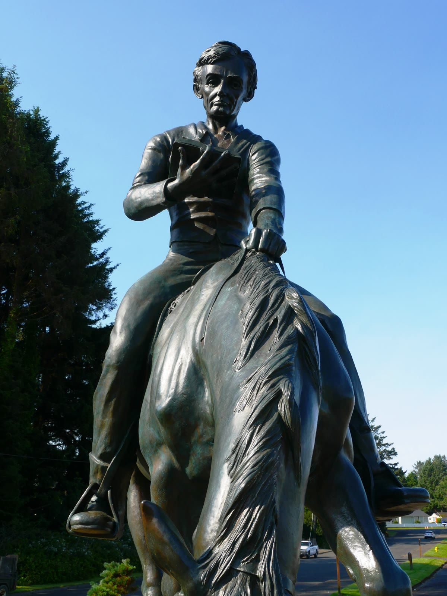

NE 22nd and Quay Place
Abraham Lincoln on horseback
Anna Hyatt Huntington's bronze of a beardless Abraham Lincoln, reading as the horse's head drops, still stands in Lincoln City. Governor Mark Hatfield dedicated it on 9 October 1965. A city art inventory updated in April 2025 still places it at the corner of NE 22nd Street and NE Quay Place, beside Kirtsis Park. This is an independent Profitnet guide to that statue.


See it
- Corner
- NE 22nd Street and NE Quay Place, Lincoln City, Oregon 97367. About a block east of Highway 101. Outdoors. No ticket. The horse faces north.
- Nearby
- Kirtsis Park is at 2205 NE 22nd Street, with a mural by Veta Bakhtina. The Lincoln City art trail lists this statue as Lincoln on the Prairie.
- Visitor line
- Explore Lincoln City, (541) 996-1274.
Still on the corner
The city's public-art inventory, with values adjusted as of April 2025, still lists Abraham Lincoln on Horseback at that corner, near Kirtsis Park. Donna Eddy evaluated it in June 2023 and reported the sculpture in good condition. The same note said the fence was sagging and needed stain. The inventory puts the original insurance and transport value at $60,000 and the April 2025 value at $155,000.
A photograph of the plaque dated 14 May 2026 still shows the plate on the monument. It reads Abraham Lincoln on Horseback, donated by sculptress Anna Hyatt Huntington, 1965.
In 2011 the council asked whether the piece should move to the Lincoln City Cultural Center, the old Delake school at 540 NE Highway 101. Arts committee chair Emily Rogers told that March 28 meeting that moving the 4-ton bronze would be costly, and that the custody agreement already sets where it belongs. The setting was to be generally in accordance with landscape architect Barrie Greenbie's plans, published in the News Guard on 3 July 1965. The community center, built in 1980 and expanded in 2004, is not in those plans. The 2025 inventory still has the statue at 22nd and Quay, not at the cultural center.
The trip west, and the dedication
Huntington gave the bronze on behalf of the school children of the Oregon Territory. The Margaret Brent Fellowship of Washington, D.C., was part of the placement. The statue was damaged on the way from the East Coast. The city hired sculptor James Hansen to repair it. The News Guard describes the rail route through Canada, chosen to clear overpasses and tunnels.
Hatfield dedicated it on 9 October 1965, at the start of the 20 Miracle Miles Autumn Festival of the Arts, a hundred years after Lincoln's death. Ownership passed to Lincoln City on 12 November 1965. The agreement requires the city to maintain the statue and the park. If the city changes its name, the statue goes to the state. The city's art trail says acquiring the statue played a significant role in the choice of the name Lincoln City.
The figure is a young Lincoln without a beard, a book open in his hands, the horse's head down. The pose marks the years after 1849, when he declined President Zachary Taylor's offer of the governorship of the Oregon Territory and went back to the law, reading as he rode the circuit.
The sculptor
Anna Hyatt Huntington, 1876 to 1973, was a New York sculptor known for animals and for large public bronzes. This Lincoln is one of her equestrian figures. She is also the donor named on the plaque. The city inventory lists her as both artist and donor.
A later look at the bronze
The inventory notes that the bridle was still reported missing as of February 2018, that a bronze conservator had worked on the piece before that date, and that Cascadia Art Conservation Center completed an assessment in May 2018. The June 2023 evaluation is the later city check, and it found the sculpture in good condition.
Other Lincolns
This is not the Portland bronze. George Fite Waters's Abraham Lincoln, given by Henry Waldo Coe and dated 1927 on the city's monument list, is marked offsite. The seated bronze on the square in Hodgenville, Kentucky, is another figure entirely: the Lincoln statue in Hodgenville. In Portland, the outdoor pieces on this site are Portlandia and the gilded Joan of Arc in Coe Circle. On the coast, the horseback reader at 22nd and Quay is the one this page is for.
Questions
Who made the Lincoln City statue, and when was it dedicated?
Anna Hyatt Huntington made the bronze and gave it to the city. Governor Mark Hatfield led the dedication on 9 October 1965, at the start of the 20 Miracle Miles Autumn Festival of the Arts. The city took ownership on 12 November 1965.
Where is it now?
At the corner of NE 22nd Street and NE Quay Place, beside Kirtsis Park. A city art inventory updated in April 2025 still lists it there. A June 2023 check found the sculpture in good condition.
Is this the Portland Park Blocks Lincoln?
No. Portland's George Fite Waters bronze is a different statue. The city's monument list now marks that one offsite. This page is the horseback figure in Lincoln City. The seated bronze in Hodgenville, Kentucky, is a third Lincoln.
Sources
- City of Lincoln City public art inventory. Dedication on 9 October 1965, the corner of NE 22nd and NE Quay, the June 2023 condition, and the April 2025 value.
- Lincoln City Art Trail. Lincoln on the Prairie, NE 22nd Street, and Governor Hatfield.
- The News Guard, 5 April 2011. The rail route through Canada, the 4-ton weight, and the 2011 talk of a move.
- Roadside America. 22nd Street and Quay Place, the horse facing north, and the 1849 story.
- Plaque photograph, 14 May 2026, Rick Obst. The donation plate still on the monument.
- City of Portland monuments. George Fite Waters's Lincoln, dated 1927, now listed offsite.

Last updated .